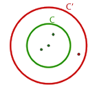

Ejercicios interactivos de posiciones relativas de circunferencias
Señala la opción correcta:
1Un punto presenta...
Un punto presenta tres posibles posiciones respecto a una circunferencia:
Interior, sobre la circunferencia y exterior.
2Una recta tangente a una circunferencia...
3Una recta secante a una circunferencia...
4Una recta que pasa por dos puntos exteriores a una circunferencia...
Una recta que pasa por dos puntos exteriores a una circunferencia puede ser interior, exterior o tangente a esta.
Observa las tres posibilidades:
5Cuando en una mesa colocamos los platos como en el dibujo nos recuerda ...

6Dos circunferencias secantes...
7Dos circunferencias que se cortan en un único punto se llaman...
8Las posiciones de dos circunferencias que no implican puntos en común son:
9Dadas dos circunferencias C y C', con C interior a C'...
Los puntos verdes son interiores a C y a C' mientras que el punto rojo solo es interior a C'

10Una recta secante a una circunferencia...
Si tienes dudas puedes consultar la teoría